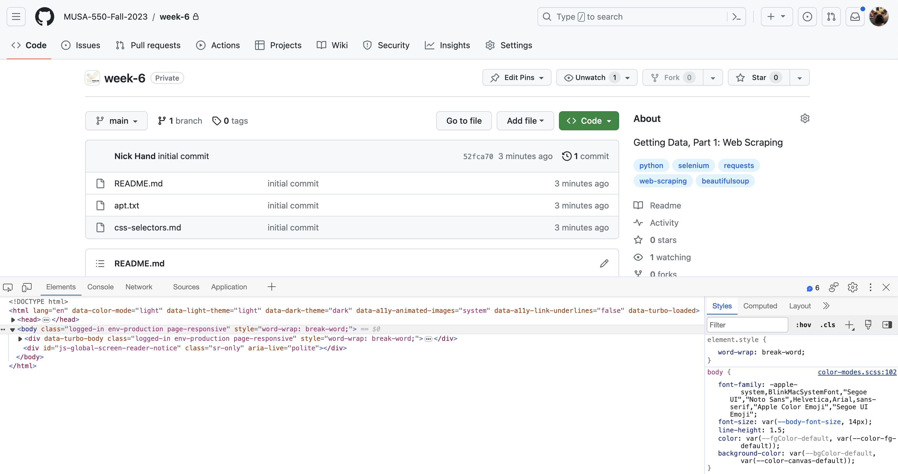
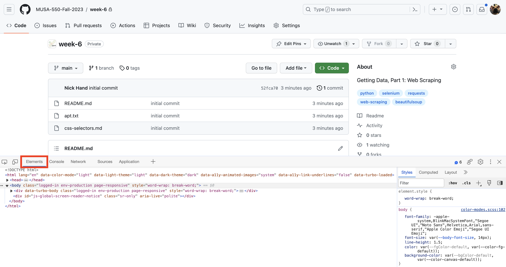

The facial recognition startup Clearview AI scraped billions of photos from social media websites. They recently settled a class action lawsuit that alleged they violated privacy laws
Web scraping at a massive scale has been a key ingredient in generating the training datasets for generative AI models like ChatGPT. Companies like OpenAI and Meta have been sued by authors and other content creators for violating copyright laws.
When is scraping more likely to be appropriate?
.gov sites and, to a lesser degree, .edu sites
Website owner has no business reason to protect the information
Not prohibited in terms of use
Limited number of requests
Not too many requests all at once
Done at night, when web traffic is low
When is scraping less likely to be appropriate?
search engines
E-commerce sites (e.g. Zillow, Expedia, Amazon)
Social media
Prohibited in terms of use
Large number of requests
High frequency of requests
With that being said, let’s do some web scraping…
Part 3: Web fundamentals
So many acronyms:
HTML
The DOM
CSS
HTML: HyperText Markup Language
The language most websites are written in
The browser knows how to read this language and renders the output for you
HTML is what a web crawler will see
HTML tags
There are a standard set of tags to define the different structural components of a webpage
For example:
<h1>, <h2> tags define headers
<p> tags define paragraphs
<ol> and <ul> are ordered and unordered lists
Rendering HTML in Jupyter
Use the %%html magic cell command
%%html<html><head><title>TITLE GOES HERE</title></head><body><h3>MAIN CONTENT GOES IN THE BODY TAG</h3><p>This is a paragraph tag</p><p>This is a second paragraph tag</p></body></html>
TITLE GOES HERE
MAIN CONTENT GOES IN THE BODY TAG
This is a paragraph tag
This is a second paragraph tag
Elements, tags, and attributes
Learning the notation:
%%html<a id="my-link" style="color: orange;" href="https://www.design.upenn.edu" target="blank_">This is my link</a>
An interactive object tree created from the HTML tag hierarchy on a page
Created by the browser
Tracks user interactions
It is dynamic: stores the current state of the webpage
Part 4: Inspecting webpages with browser tools
Opening the Web Inspector
Modern web browsers provide tools for inspecting the source HTML and DOM of websites
Also tells you data sources that have been loaded by the page
This should also be your first step when starting to scrape a page
Tip:
To load the Web Inspector in most modern browsers, you can simply hit the F12 button

The Elements tab
Allows you to inspect the DOM directly
The tool that will allow you to identify what data you want to scrape from a website

Tip:
Tip: Viewing an element’s source code 1. Right click on the element you want to view 2. Click on “Inspect” 3. The element will be highlighted in the DOM (in the Elements tab)
The Network tab: finding data sources
The network tab tracks all of the content loaded by a website. Many modern websites that use data will “fetch” the data from an external (possibly nonpublic) data source. The Network tab will show you these sources, potentially allowing you to get the data without writing any scraping code at all.
The places to look
The Fetch/XHR filter: all of the external XLM HTTP fetch requests, often used to load external data
The JS tab: Javascript files loaded by the site, which can sometimes include data
If you’re looking for GeoJSON data, you’ll want to look for .json files
When using the Network tab, you can right click on the listed entry in the left. Then, you can either select the “Open in new tab” option or the “Copy response” option. This will let you get the desired data into a new window or copied to your clipboard so you can save it to a file.
Part 5: Guided demo — Philadelphia city health centers
Let’s scrape the Locations and hours table on the City of Philadelphia’s public City health centers page.
This replaces the unavailable Inquirer restaurant-inspection demo. The city page includes its table in the HTML response, so we can extract it with requests and BeautifulSoup without running JavaScript.
Open the live page in your browser. We will collect each center’s name, address, services, phone information, and hours. You only need an internet connection and the requests, beautifulsoup4, and pandas packages; no local data file is needed. The number of locations and their details may change over time.
Step 1: Request the HTML
Use one GET request with a timeout, then check for HTTP errors before parsing. A browser user agent helps avoid the HTTP 403 response this site can return to default automated clients. If access is denied, stop and inspect the response rather than repeatedly retrying.
table = soup.select_one("table.dcf-table")if table isNone:raiseValueError("Health center table not found. Inspect the live page for HTML changes.")headers = [tag.get_text(" ", strip=True) for tag in table.select("thead th")]headers
['Name', 'Address', 'Services', 'Phone', 'Hours']
Check the headings before extracting records: an HTTP 200 response alone does not prove we downloaded the expected table.
expected_headers = ["Name", "Address", "Services", "Phone", "Hours"]if headers != expected_headers:raiseValueError(f"Unexpected table columns: {headers}. Inspect the page before continuing.")
Select the first location row
tbody > tr:nth-of-type(1) is a CSS selector we write, not text that appears as an HTML tag. You will not see that exact string in the Elements tab when you inspect the page.
Read the selector one piece at a time:
Part
Meaning
tbody
The table body, containing the location rows.
>
Look for direct children of that element.
tr
A table row.
:nth-of-type(1)
Choose the first sibling of this tag type: here, the first row.
Follow the structure in Inspect:
On the live city page, right-click Health Center 1 and choose Inspect.
The highlighted element may be <strong> or its enclosing <td>.
Move upward through its parents: <strong> → <td> → <tr> → <tbody> → <table>. Expand the arrows beside collapsed elements as needed.
Notice that <tr> is a direct child of <tbody>. That relationship is what tbody > tr describes.
You should see a structure like this (other cells and rows are omitted):
<table class="dcf-table ..."><tbody><tr><td data-label="Name"><strong>Health Center 1</strong></td><!-- Other cells in this row --></tr><!-- Other location rows --></tbody></table>
A browser’s Copy → Copy selector may generate a much longer selector containing positional parts such as :nth-child(...). Our shorter selector is based on the structure we inspected; it does not need to match the browser’s copied selector exactly.
In the code below, table already refers to the health centers table. We search within that table, rather than across the entire webpage.
<tr>
<td data-label="Name">
<strong>
Health Center 1
</strong>
</td>
<td data-label="Address">
1930 S Broad St., Fl. 2
<br/>
Philadelphia, PA 19145
</td>
<td data-label="Services">
Urgent care STD testing and treatment only.
<div class="disclaimer-text">
</div>
</td>
<td data-label="Phone">
(215) 685-6570
</td>
<td data-label="Hours">
<strong>
Monday
</strong>
<br/>
7:45 a.m. – 7 p.m.
<br/>
<strong>
Tuesday
</strong>
<br/>
7:45 a.m. – 4 p.m.
<br/>
<strong>
Wednesday
</strong>
<br/>
7:45 a.m. – 4 p.m.*
<br/>
<strong>
Thursday
</strong>
<br/>
7:45 a.m. – 4 p.m.
<br/>
<strong>
Friday
</strong>
<br/>
7:45 a.m. – 4 p.m.
<br/>
<strong>
Saturday
</strong>
<br/>
Closed
<p class="disclaimer-text">
<em>
* Clinic opens at 1 p.m. on first Wednesday each month. Hours subject to change with service demand.
</em>
</p>
</td>
</tr>
Step 4: Generalize the selector to all location rows
Remove :nth-of-type(1) to select every row. The > means a direct child. Starting from table keeps our search inside the table we already checked, and using tbody excludes the heading row.
A simpler way to select the first row:select_one() already returns only the first match, so this also works:
first_row = table.select_one("tbody > tr")
Compare the three expressions:
Expression
Result
table.select_one("tbody > tr:nth-of-type(1)")
The first location row, selected explicitly by position.
table.select_one("tbody > tr")
The first location row, because select_one() returns the first match.
table.select("tbody > tr")
A list of all location rows.
Now use select() to collect all rows:
rows = table.select("tbody > tr")ifnot rows:raiseValueError("No health center rows found. Check the live HTML and selector.")len(rows)
9
row = rows[0]
Step 5: Extract fields from one row
Each <td> has a data-label attribute identifying its column. Attribute selectors such as td[data-label="Name"] are easier to read than selecting a column by its position.
Addresses contain <br> line breaks. get_text(" ", strip=True) inserts a space between text fragments and trims whitespace, so the street and city stay separated.
{'services': 'Urgent care STD testing and treatment only.',
'phone': '(215) 685-6570',
'hours': 'Monday 7:45 a.m. – 7 p.m. Tuesday 7:45 a.m. – 4 p.m. Wednesday 7:45 a.m. – 4 p.m.* Thursday 7:45 a.m. – 4 p.m. Friday 7:45 a.m. – 4 p.m. Saturday Closed * Clinic opens at 1 p.m. on first Wednesday each month. Hours subject to change with service demand.'}
Nested selectors and optional elements
Some centers list a separate dental phone number; others do not. Select the <strong> labels inside the Phone cell. Searching all <strong> tags in the row would also collect weekday names from Hours.
select() returns an empty list when there are no matching labels. select_one() would return None; check for it before accessing .text.
phone_labels = row.select('td[data-label="Phone"] strong')[label.get_text(" ", strip=True) for label in phone_labels]
[]
Step 6: Build a DataFrame
Loop over the same downloaded rows; we do not need another web request. Check required cells so a page redesign produces a useful error rather than silently recording missing values.
data = []fields = {"name": "Name","address": "Address","services": "Services","phone": "Phone","hours": "Hours",}for this_row in rows: record = {}for field, label in fields.items(): tag = this_row.select_one(f'td[data-label="{label}"]')if tag isNone:raiseValueError(f"Missing {label} cell. Inspect the live table structure.") record[field] = tag.get_text(" ", strip=True) data.append(record)scraped_df = pd.DataFrame(data)scraped_df
name
address
services
phone
hours
0
Health Center 1
1930 S Broad St., Fl. 2 Philadelphia, PA 19145
Urgent care STD testing and treatment only.
(215) 685-6570
Monday 7:45 a.m. – 7 p.m. Tuesday 7:45 a.m. – ...
1
Health Center 2
1700 S. Broad St. Unit 201 Philadelphia, PA 19145
Primary care services
Medical (215) 685-1800 Dental (215) 685-1822
Monday 8 a.m. – 4:30 p.m. Tuesday 8 a.m. – 4:3...
2
Health Center 3
555 S. 43rd St. Philadelphia, PA 19104
Primary care services
Medical (215) 685-7504 Dental (215) 685-7506
Monday 8 a.m. – 8 p.m. Tuesday 8 a.m. – 4:30 p...
3
Health Center 4
4400 Haverford Ave. Philadelphia, PA 19104
Primary care services
Medical (215) 685-7601 Dental (215) 685-7605
Monday 8 a.m. – 4:30 p.m. Tuesday 8 a.m. – 8 p...
4
Health Center 5
1900 N 20th St. Philadelphia, PA 19121
Primary care services
Medical (215) 685-2933 Dental (215) 685-2938
Monday 8 a.m. – 4:30 p.m. Tuesday 8 a.m. – 8 p...
5
Health Center 6
301 W. Girard Ave. Philadelphia, PA 19123
Primary care services
Medical (215) 685-3803 Dental (215) 685-3816
Monday 8 a.m. – 4:30 p.m. Tuesday 8 a.m. – 4:3...
6
Mattie L. Humphrey Health Center (formerly Hea...
131 E. Chelten Ave. Philadelphia, PA 19144
Primary care services
Medical (215) 685-5701 Dental (215) 685-5738
Monday 8 a.m. – 4:30 p.m. Tuesday 8 a.m. – 4:3...
7
Health Center 10
2230 Cottman Ave. Philadelphia, PA 19149
Primary care services
Medical (215) 685-0639 Dental (215) 685-0639
Monday 7:30 a.m. – 4 p.m. Tuesday 7:30 a.m. – ...
8
Strawberry Mansion Health Center
2840 West Dauphin St. Philadelphia, PA 19132
Primary care services
Medical (215) 685-2401 Dental (215) 685-2401
Monday 8 a.m. – 4:30 p.m. Tuesday 8 a.m. – 4:3...
Step 7: Prepare the addresses for spatial analysis
Extract the five-digit ZIP code from each address. Keep it as text because ZIP codes are identifiers. We can later geocode the street addresses to map the centers.